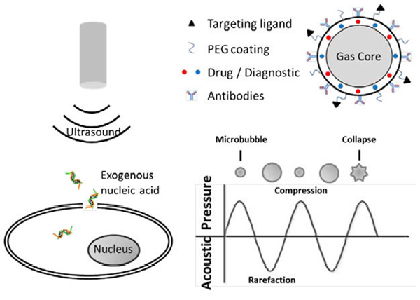

Physical Techniques for Gene Delivery Based on Membrane Perforation
Feb 10, 2021 | 2 min read

Feb 10, 2021 | 2 min read
Electroporation
In electroporation, the cell is exposed to an external pulse electric field (10-20 kV/cm) which increases the
cell permeability, thereby facilitating gene transfer. When the strength of the electric field exceeds
the threshold voltage, a transient pore is formed in the cell membrane, and the exogenous nucleic acids are
delivered into the cell. This pore is resealed within minutes by the cell’s membrane repair mechanism.

Figure 1.Principle of Electroporation
Magnetoporation
In this technique, the nucleic acid is delivered into the cell under the influence of a magnetic field.
Exogenous nucleic acids are mixed with magnetofection reagents such as CoFe2O4,
NiFe2O4 and MnFe2O4, which exhibits superior transfection
efficiency than other magnetic materials. A magnetic- reagent complex is formed which is delivered
to the cell under the influence of the magnetic field. Endocytosis and pinocytosis of the cell are
accelerated under the magnetic field. Carbon nanotubes (CNTs) are also used as magnetofection reagent
to enhance the transfection efficiency of magnetoporation.

Figure 2.Principle of Magnetoporation
Sonoporation
Sonoporation is the technique of creating perforation in the targeted cell membrane using ultrasound waves
of megahertz frequencies. It generates two types of physical effects; either thermal or nonthermal.
Ultrasound mediated delivery is facilitated by the non-thermal effects such as cavitation, mechanical
streaming and radiation forces generated at low ultrasound intensity. Cavitation is formed in a liquid
containing gaseous bubbles. When the ultrasound intensity is instantaneously increasing, the cavitation
bubble collapses immediately, which causes shock waves and microjets to perforate the cell membrane.
In advanced aspects of sonoporation, microbubbles and nanobubbles are employed as they improve transfection
efficiency. Too high or too low concentration of microbubbles can reduce the transfection efficiency of
sonoporation.

Figure 3.Principle of Sonoporation
Optoporation
Optoporation is a technique in which a transient perforation in the cell membrane is made using focused
ultrashort laser pulses. It has emerged as a powerful technique of transferring exogenous genome into targeted
cells. A laser beam is focused on the cell membrane to ablate the cell membrane, form a transient hole, and
the exogenous nucleic acid is delivered into the cell. High-intensity laser irradiates the cell and produces
plasma, which creates high pressure and acts on the cell membrane to enhance its permeability. Plasma can
generate bubbles that ultimately collapse and produce secondary shock waves to perforate the cell membrane.

Figure 4.Principle of Optoporation

Oct 28, 2020 | 2 min read

Oct 31, 2020 | 1 min read